✎ Edit the text of this page opens its markdown file on GitHub; once saved, the site is rebuilt within a few minutes
BC Roma vs Bertram Derthona Tortona
🗄 Archive, automatic only: this game has been played and no analysis of it is planned; the page is what the data produced (tables and figures), with no text of the analyst. Set
reviewed: yesinweekly/games/2026-10-04/analysis.mdto remove this note.
➜ BC Roma before this game: situation, roster and form (pre-game snapshot)
Round 2 · Sunday 04 October 2026, 16:00 · Palazzetto dello Sport
Pre-game analysis: only data from games played before Sunday 04 October 2026. League games; early in the season the samples are small, so read everything as tendencies, not established facts.
Author: Giulia Martini
Key points
LBA so far: results and standings
All 10 LBA games played before this match (rounds 1 to 2); home team first.
- Round 1: Treviso 109-94 BC Roma · Venezia 85-73 Cantù · Reggio Emilia 78-83 Trento · Milano 83-79 Trieste · Tortona 101-93 Verona · Udine 87-63 Scafati · Maxima Roma 75-94 Napoli · Varese 69-90 Virtus Bologna
- Round 2: Trento 90-93 Treviso · Napoli 99-93 Reggio Emilia
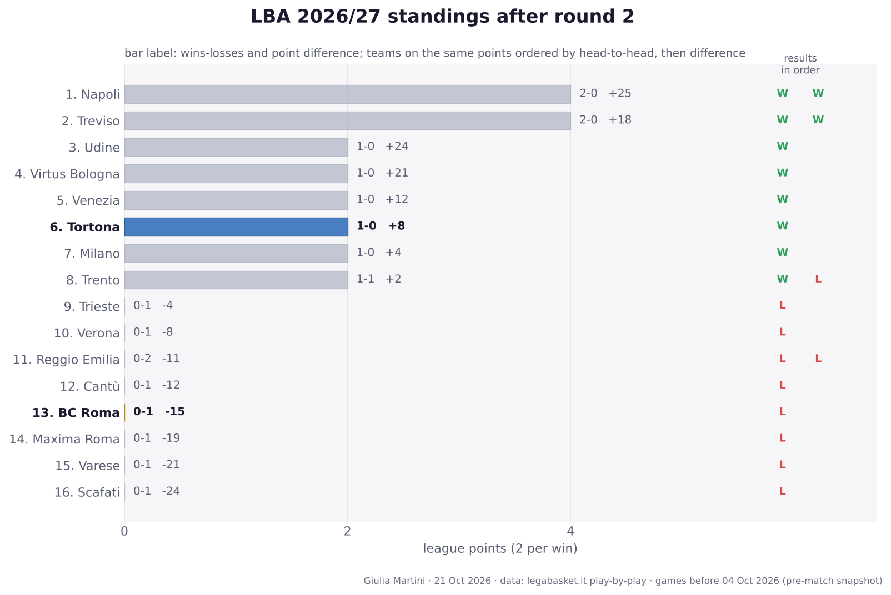
Standings after round 2
| # | Team | Pts | W-L | Points for-against | Diff | Results |
|---|---|---|---|---|---|---|
| 1 | Napoli | 4 | 2-0 | 193-168 | +25 | WW |
| 2 | Treviso | 4 | 2-0 | 202-184 | +18 | WW |
| 3 | Udine | 2 | 1-0 | 87-63 | +24 | W |
| 4 | Virtus Bologna | 2 | 1-0 | 90-69 | +21 | W |
| 5 | Venezia | 2 | 1-0 | 85-73 | +12 | W |
| 6 | Tortona | 2 | 1-0 | 101-93 | +8 | W |
| 7 | Milano | 2 | 1-0 | 83-79 | +4 | W |
| 8 | Trento | 2 | 1-1 | 173-171 | +2 | WL |
| 9 | Trieste | 0 | 0-1 | 79-83 | -4 | L |
| 10 | Verona | 0 | 0-1 | 93-101 | -8 | L |
| 11 | Reggio Emilia | 0 | 0-2 | 171-182 | -11 | LL |
| 12 | Cantù | 0 | 0-1 | 73-85 | -12 | L |
| 13 | BC Roma | 0 | 0-1 | 94-109 | -15 | L |
| 14 | Maxima Roma | 0 | 0-1 | 75-94 | -19 | L |
| 15 | Varese | 0 | 0-1 | 69-90 | -21 | L |
| 16 | Scafati | 0 | 0-1 | 63-87 | -24 | L |
Two points per win. Teams level on points are ordered by the games between them, then by point difference; with so few games played most of them have not met yet, so the order inside a group on the same points is provisional (newspapers sometimes list it differently).
Results timeline
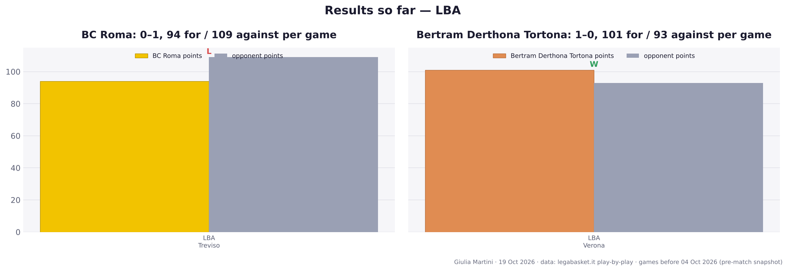
BC Roma and Tortona compared
BC Roma: 0-1, 13th, last five L · Tortona: 1-0, 6th, last five W
| BC Roma | Tortona | |
|---|---|---|
| Games | 1 | 1 |
| Record | 0-1 | 1-0 |
| Points per game | 94.0 | 101.0 |
| Points allowed per game | 109.0 | 93.0 |
| Offensive rating | 123.3 | 135.8 |
| Defensive rating | 137.3 | 120.0 |
| Net rating | -14.0 | 15.8 |
| Pace (possessions per 40') | 77.8 | 75.9 |
| eFG% | 56.3 | 75.0 |
| TOV% (per 100 poss.) | 15.7 | 16.1 |
| OREB% | 43.2 | 19.0 |
| FT rate (FTA/FGA) | 29.6 | 32.8 |
| 3PA per game | 36.0 | 18.0 |
| 3P% | 33.3 | 50.0 |
| 2P% | 62.9 | 75.0 |
| FT% | 66.7 | 73.7 |
| Assists per game | 22.0 | 21.0 |
| Offensive rebounds per game | 16.0 | 4.0 |
| Defensive rebounds per game | 23.0 | 21.0 |
| Opp. eFG% | 60.9 | 50.6 |
| Opp. TOV% (forced) | 8.8 | 12.9 |
| DREB% | 65.7 | 51.2 |
Ratings are points per 100 possessions. Games before this one in the league (LBA Serie A) only: the comparison uses EuroCup games only when both teams play the EuroCup.
The two teams at a glance
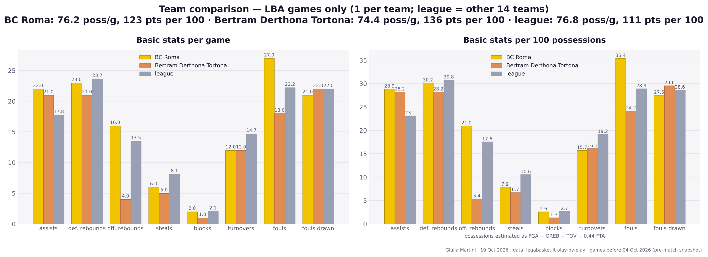
Tortona roster
Per-game averages before this game, league and EuroCup games. Shooting: 2P%, 3P% and FT%, each followed by the attempts per game in brackets (2PA, 3PA, FTA).
| # | Player | Pos | Age | Nat | Ht | Wt | GP | MIN | PTS | REB | AST | PIR | 2P% (2PA) | 3P% (3PA) | FT% (FTA) | PPG LBA | |
|---|---|---|---|---|---|---|---|---|---|---|---|---|---|---|---|---|---|
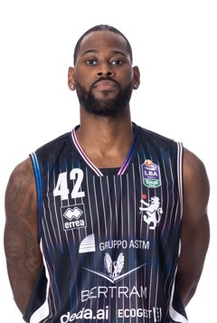 |
42 | Durham | Playmaker | 28 | USA | 193 | 97 | 1 | 14.0 | 10.0 | 3.0 | 4.0 | 12.0 | 100 (3.0) | 100 (1.0) | 100 (1.0) | 10.0 |
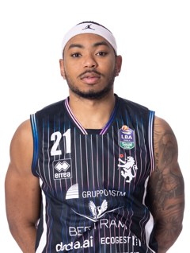 |
21 | Maddox | Guardia | 24 | USA | 188 | 91 | 1 | 25.0 | 23.0 | 4.0 | 2.0 | 27.0 | 100 (5.0) | 67 (6.0) | 33 (3.0) | 23.0 |
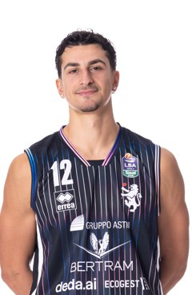 |
12 | Bortolani | Guardia | 25 | ITA | 194 | 85 | 1 | 18.0 | 13.0 | 1.0 | 0.0 | 11.0 | 75 (4.0) | 50 (4.0) | 50 (2.0) | 13.0 |
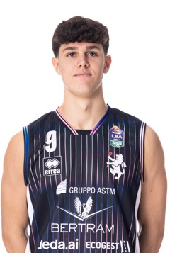 |
9 | Di Meo | Guardia | 18 | ITA | 190 | 89 | 0 | – | – | – | – | – | – | – | – | – |
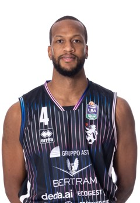 |
4 | Gorham | Ala | 28 | USA | 201 | 102 | 1 | 31.0 | 14.0 | 3.0 | 2.0 | 17.0 | 100 (6.0) | 0 (1.0) | 100 (2.0) | 14.0 |
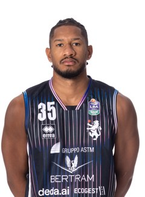 |
35 | Jallow | Ala | 29 | DEU | 198 | 90 | 1 | 23.0 | 5.0 | 3.0 | 2.0 | 7.0 | 50 (4.0) | – (0.0) | 100 (1.0) | 5.0 |
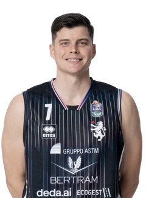 |
7 | Alibegovic | Ala | 31 | ITA | 206 | 109 | 1 | 19.0 | 10.0 | 2.0 | 1.0 | 7.0 | 80 (5.0) | 0 (1.0) | 67 (3.0) | 10.0 |
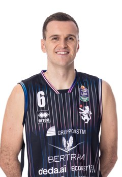 |
6 | Pecchia | Ala | 28 | ITA | 197 | 90 | 1 | 18.0 | 2.0 | 2.0 | 1.0 | 3.0 | 50 (2.0) | – (0.0) | – (0.0) | 2.0 |
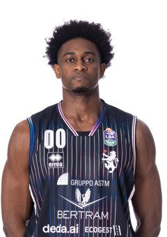 |
0 | Eboua | Ala/Centro | 26 | ITA | 203 | 97 | 0 | – | – | – | – | – | – | – | – | – |
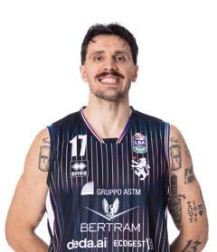 |
17 | Olejniczak | Centro | 30 | POL | 213 | 118 | 1 | 24.0 | 11.0 | 5.0 | 1.0 | 17.0 | 67 (6.0) | – (0.0) | 75 (4.0) | 11.0 |
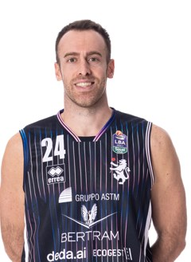 |
24 | Gazzotti | Centro | 35 | ITA | 202 | 104 | 1 | 2.0 | 0.0 | 0.0 | 0.0 | 0.0 | – (0.0) | – (0.0) | – (0.0) | 0.0 |
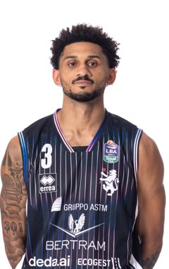 |
3 | Hubb | Play/Guardia | 27 | USA | 190 | 80 | 1 | 26.0 | 13.0 | 1.0 | 8.0 | 18.0 | 40 (5.0) | 40 (5.0) | 100 (3.0) | 13.0 |
| 8 | Furfaro | - | 16 | ITA | – | – | 0 | – | – | – | – | – | – | – | – | – |
Starting five and bench
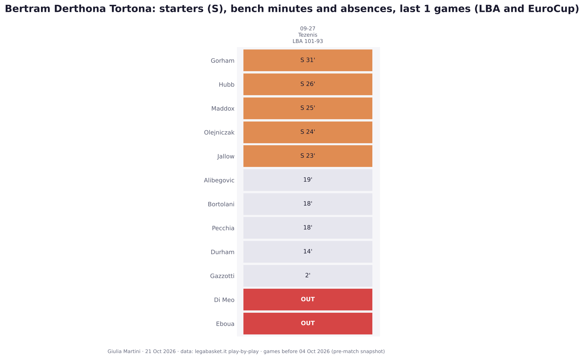
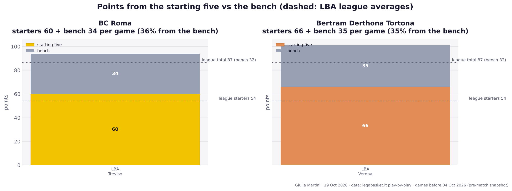
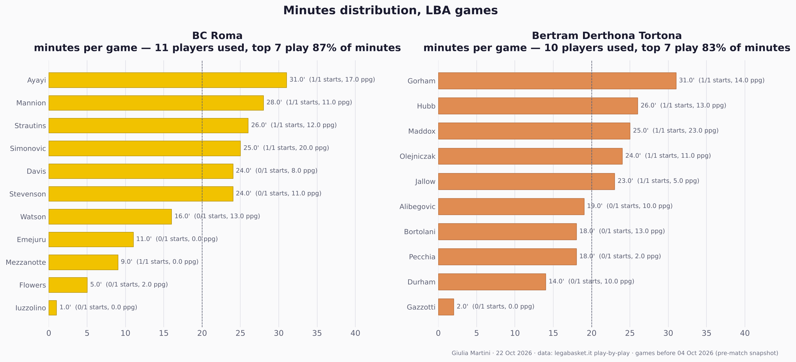
Scoring sources, tendencies and shooting maps
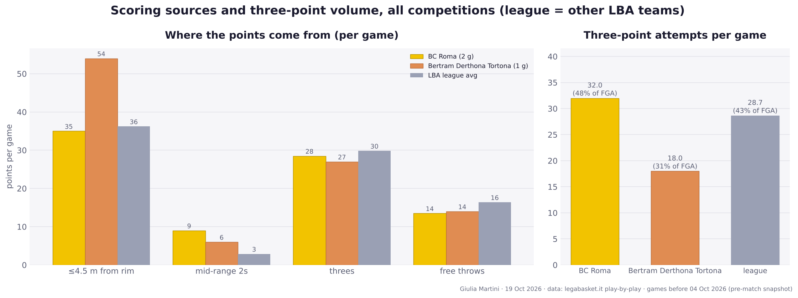
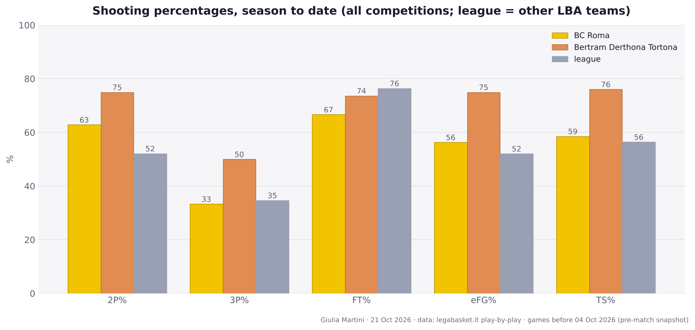
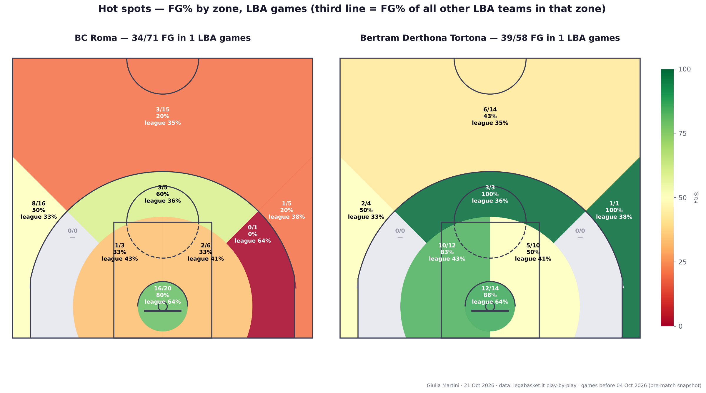
Key players
Shooting
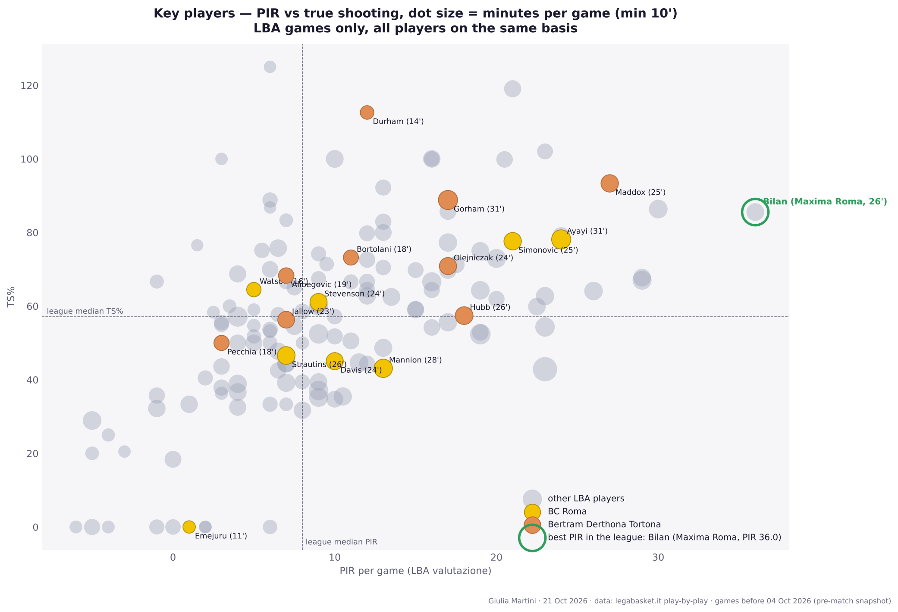
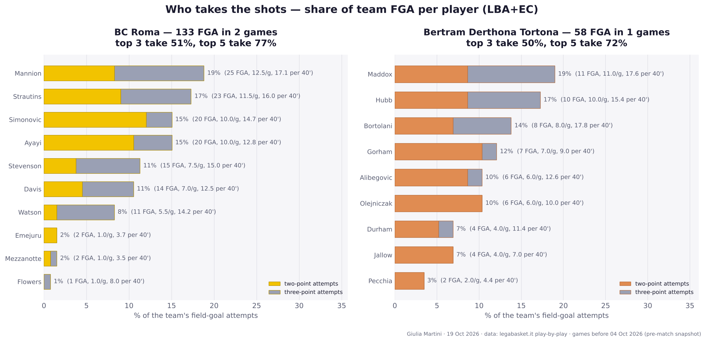
Other stats
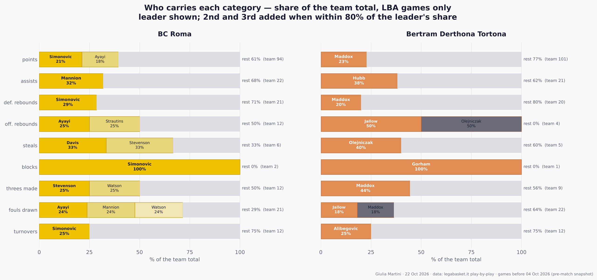
Ball movement
Assists
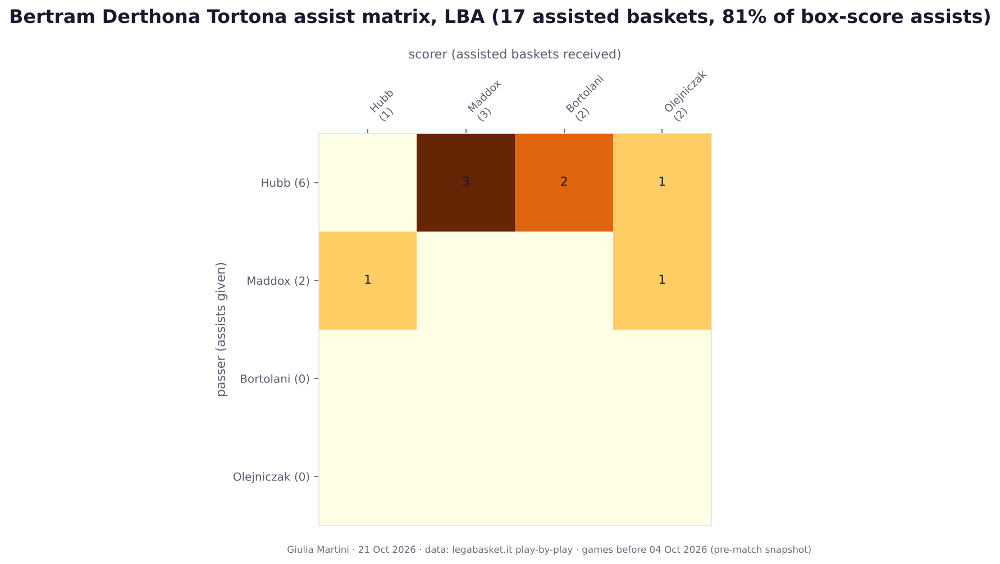
Passer (rows) to scorer (columns), assisted baskets linked in the LBA play-by-play, games before this one. Most frequent pairs: Hubb → Maddox (3), Hubb → Bortolani (2), Durham → Gorham (1), Durham → Olejniczak (1), Gorham → Alibegovic (1).
Turnovers
| Player | GP | MIN | TO | TO/min | Most TO in a game |
|---|---|---|---|---|---|
| Alibegovic | 1 | 19.0 | 3 | 0.158 | 3 vs Tezenis Verona (27/09) |
| Gorham | 1 | 31.0 | 2 | 0.065 | 2 vs Tezenis Verona (27/09) |
| Hubb | 1 | 26.0 | 2 | 0.077 | 2 vs Tezenis Verona (27/09) |
| Durham | 1 | 14.0 | 2 | 0.143 | 2 vs Tezenis Verona (27/09) |
| Maddox | 1 | 25.0 | 1 | 0.040 | 1 vs Tezenis Verona (27/09) |
| Olejniczak | 1 | 24.0 | 1 | 0.042 | 1 vs Tezenis Verona (27/09) |
| Jallow | 1 | 23.0 | 1 | 0.043 | 1 vs Tezenis Verona (27/09) |
| Bortolani | 1 | 18.0 | 0 | 0.000 | 0 vs Tezenis Verona (27/09) |
| Pecchia | 1 | 18.0 | 0 | 0.000 | 0 vs Tezenis Verona (27/09) |
| Gazzotti | 1 | 2.0 | 0 | 0.000 | 0 vs Tezenis Verona (27/09) |
TO = turnovers in the games before this one (league and EuroCup where the team plays it); TO/min = turnovers per minute played. The last column is the game in which the player lost the most balls; the two worst single-game totals of the whole roster are highlighted.
Lineups
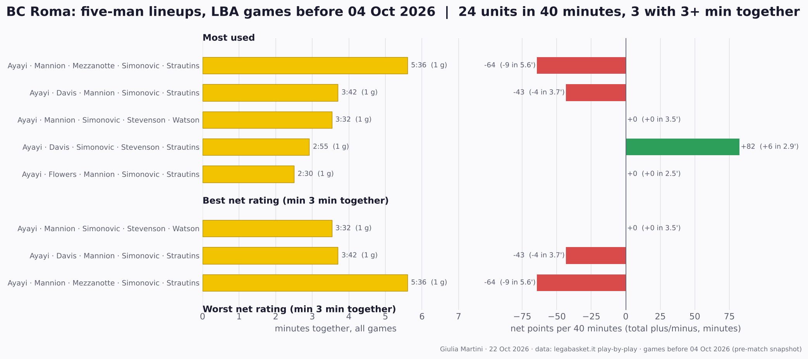
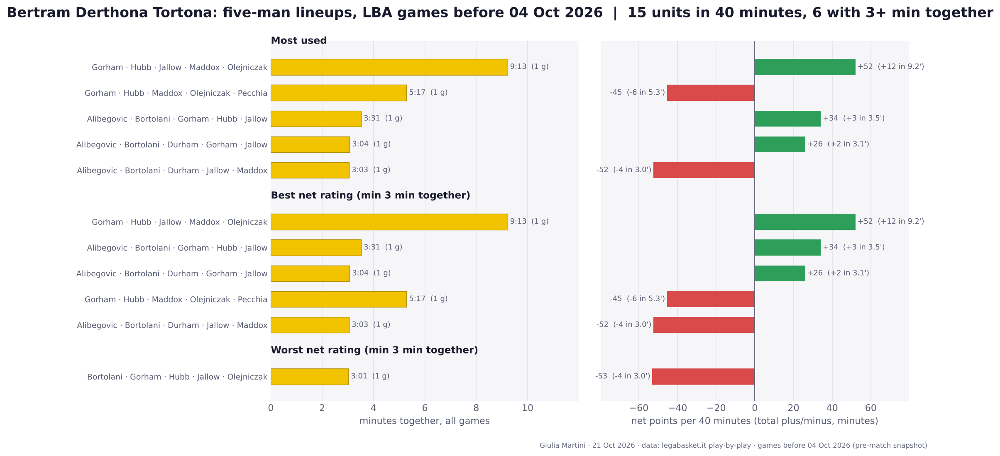
Comments
Anyone with a GitHub account can comment here; the comments are kept as a GitHub issue of the repository, one per page.